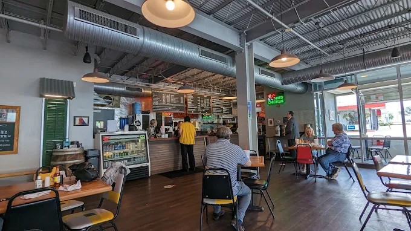
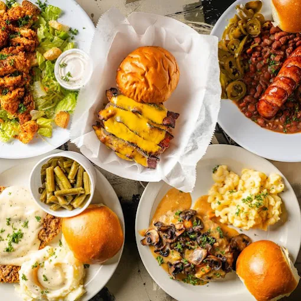

Sometimes, to find the soul of a city, you must bypass the opulent restaurants with their multi-page leather menus. Instead, you go where the scent of freshly baked bread intertwines with the hum of the neighborhood. In Jackson, Mississippi, if you find yourself on State Street, a building with a striking azure facade will make you stop in your tracks. This is Rooster’s—a sanctuary in the heart of the Fondren arts district that serves its guests with "honesty and intimacy" rather than glitz and glamour. Entering this restaurant is not a simple choice for lunch; it is an experience of contrast between industrial cool and the nostalgic warmth of the South. It is a place where garage-style windows open up to the rhythm of life, and every corner tells a story of the city’s deep roots.
A Beacon on the Corner
Rooster’s is situated on the ground floor of a multipurpose building, draped in a stunning lapis blue. This deep hue, paired with the restaurant’s white accents, creates a visual pop. The word "Corner"—rendered in a bold, 1960s-style font—commands attention from afar on State St. Its corner location doesn't just offer better visibility; it allows the interior lighting to act as a lantern in the Fondren night, drawing patrons toward its glow.

One of the most captivating exterior features is the large, retractable garage-style windows. This design blurs the line between the sidewalk and the dining room. On those pleasant Mississippi days, it allows the open air and the sounds of the neighborhood to flow freely inside. The Rooster’s sign, with its classic font, red edges, and blue-and-white background, is a perfect slice of Vintage Americana. Next to it, the direct labels—"Hamburgers & Fried Chicken"—tell you exactly what to expect: no pretension, just authentic, soul-satisfying Southern food. While the building's overall silhouette might feel rugged or industrial, details like the red planters at the door and the soft interior lighting soften the edges, giving it that quintessential "neighborhood spot" feel. This tension between the industrial exterior and the unpretentious intimacy within is perhaps the most accurate description of the Fondren spirit.
Industrial Soul, Southern Warmth
Upon entering, your eyes are immediately drawn to the massive galvanized ventilation pipes and the corrugated metal ceiling, lending the space a modern, industrial edge. This clever design choice makes the atmosphere feel larger and more airy. Simple pendant lights with dark shades focus the glow onto the tables, tempering the industrial sharpness to create a warmer dining environment.

The warmth of the wood-patterned flooring provides a beautiful balance to the grey metal columns and concrete walls. This play of contrasts continues with the metal chairs, which inject energy into the room with pops of yellow, red, and black. These classic American diner-style seats perfectly convey the "high-quality fast casual" vibe. The interior of Rooster’s is exactly what you expect from a genuine Fondren hangout: a marriage of industrial grit and nostalgic comfort. Red and green neon signs glowing with "Rooster’s" and "Fried Chicken" evoke the spirit of classic 1950s and 60s diners, casting a charming glow at night. Framed vintage photos and local sports posters on the grey walls serve as a testament to the restaurant's deep-seated roots in the Jackson community. The wooden counter, topped with large chalkboard menus, signals an efficient ordering system, while the nearby refrigerators stocked with drinks emphasize an informal, "at-home" convenience for the customers. In short, the interior of Rooster’s isn't luxury—and it doesn't want to be. It is, however, as honest, intimacy, and rooted as it gets.
The Menu: A Bridge Between the Grill and the Home Kitchen
A look at the Rooster’s menu reveals a restaurant walking the fine line between a classic burger joint and a Southern home kitchen. The menu is simple, focused, and free of pretentious buzzwords.
The stars of the show are the burgers, served in 6-ounce and 8-ounce portions. The buns are baked fresh daily, which is the secret to the dish's final texture. One of the most popular and indulgent options is the Stupid Burger, loaded with Monterey Jack cheese, grilled onions, and bacon. Another standout is the Mushroom Swiss, a high-quality, safe bet for those who crave that classic earthy flavor profile.

Beyond the burgers, the Chicken section is a pillar of the Rooster’s experience, offering both sandwiches and chicken pieces prepared either grilled or fried. However, the reason many locals flock here is for the Signature Plates—the traditional tastes of Mississippi. The Country Fried Steak, served with a classic white gravy, is one of the most authentic Southern flavors on the menu. Another inspired choice is the Smothered Chicken & Grits, a clever combination of fried chicken atop a bed of creamy cheese grits, finished with a Creole tomato sauce—a true flavor bomb. The Red Beans & Rice, accompanied by smoked sausage and jalapeños, adds serious "Southern credit" to the establishment.
The side dishes are equally rich. Beyond their famous Curly Fries, traditional staples like Mac & Cheese, Baked Beans, and Cole Slaw add variety to the table. For those who can’t choose between the different styles of potatoes, the "Fryfecta" is the ideal sampler. For dessert, the handmade Banana Pudding, prepared fresh daily, is the beloved finale for most meals here.
Value and Honest Pricing
In today’s market, finding a handmade burger with freshly baked bread for $8.95 or a grilled chicken sandwich for $8.75 is a major win. Offering burgers in two weights (6 oz and 8 oz) allows customers to pay exactly for what they need. Even the heavy-hitting Signature Plates, which include two sides of your choice, generally fall within the $12.50 to $14.25 range—exceptionally fair for high-quality food in a neighborhood as prominent as Fondren.
The only slight drawbacks are found in the dessert and beverage variety. The drink menu is limited to Fountain Drinks and Tea, a missed opportunity given that other area restaurants often serve handmade lemonades, specialty Southern shrubs, or at least local soda brands. This limited selection doesn't quite balance the heavy, savory nature of the menu; for dishes like the Country Fried Steak or the 8-ounce burgers, one feels the absence of a refreshing, sharp beverage (like a mint lemonade) to cut through the richness. Similarly, while the Banana Pudding is a high-quality artisanal treat, it carries the entire weight of the dessert section. The absence of Southern layer cakes, fruit pies, or even a simple ice cream option to pair with warm cookies is noticeable.
The Verdict
Rooster’s is an ideal destination for those seeking the "Truth of Food." While it may falter slightly in the peripheral categories of drinks and desserts, it triumphs over many of its pricier Jackson competitors in the three most important pillars: flavor, portion size, and price. This is a place where the quality of ingredients has never been sacrificed for the sake of decorative flash.
Scorecard: Rooster’s
| Category | Weight (Importance) | Score (out of 10) | Weighted Final Score |
|---|---|---|---|
| Main Menu & Quality | 50% | 9.5 | 4.75 |
| Value (Price/Portion) | 20% | 9.0 | 1.80 |
| Ambiance & Atmosphere | 15% | 8.5 | 1.27 |
| Desserts | 10% | 6.0 | 0.60 |
| Beverages | 5% | 4.0 | 0.20 |
| Total Score: | 8.62 / 10 | ||